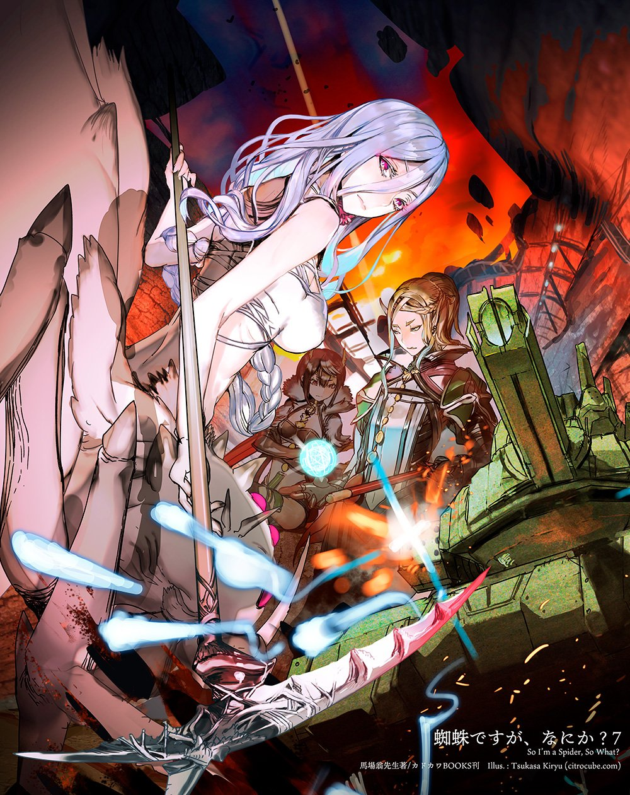

This is page Top anchor Jump to the lower section



The story revolves Eren Yeager , a boy who lives in the town of Shiganshina, located on the outermost of three circular walls protecting humanity from Titans. In the year 845, the wall is breached by two new types of Titans, named the Colossus Titan and the Armored Titan. During the incident, Eren's mother is eaten by a Titan while Eren escapes. He swears revenge on all Titans and enlists in the military along with his childhood friends, Mikasa Ackerman and Armin Arlert. He intends to join the Survey Corps, the expeditionary force that seeks to eradicate the Titans from the walls.
Five years after Shiganshina's fall, Trost is attacked once more by the Colossal Titan . The Survey Corps and regs rush to defend the city from rampaging Titans, and Eren learns that he has the mysterious ability to turn himself into a sentient Titan. This draws the attention of the Survey Corps, who intends to use his newfound power to reclaim Wall Maria. After a successful test run where Eren gains a semblance of control over his Titan form and fixes Wall randomised , the Military Police and government all hope at taking ownership over Eren and using his powers for their good. Eren is handed over to Captain Levi and Hange Zoe of the Special Operations Squad in the Survey Corps, where they test his limits and loyalty. Eren realizes that that he has to give himself pain and have a clear directive if he is to use his Titan form properly. Survey Corps commander Erwin Smith leads their troops into a daring expedition into the forest between the walls, where they encounter a sentient Female Titan killing their numbers. Levi's squad is killed in the ensuing battle, and Eren fails to use his Titan form properly in his rage. After regrouping and distancing themselves further from the Military Police's corruption, Eren and his companions deduce that their fellow military reg Annie Leonhart is the Female Titan. Eren and Annie fight, destroying property and killing many townsfolk before Annie crystallizes herself. Eren is jailed, being deemed too unstable but Levi and Erwin secure his protection.
Several days afterwards, Titans mysteriously appear within the walls with no evidence of how they got in. The Survey Corps is sent to investigate, but one of their top squad leaders is killed when he encounters the Beast Titan, an ape-like giant who can speak. Several members are cornered by Titans, which leads Ymir, one of the new Survey Corps graduates, to reveal that she can transform into a Titan herself after being exiled from a distant land. Christa Lenz tells them that her true name is Historia Reiss and that she is a member of the island's royal bloodline. Reiner Braun and Bertholt Hoover betray their team by transforming into the Armored Titan and Colossal Titan respectively after they are unable to convince Eren to return to their homeland with them. They proceed to take Eren hostage while the rest of the Survey Corps recuperate from the slew of revelations. Erwin leads a successful charge to rescue Eren, wherein Eren uses a mysterious power called 'the coordinate' to control Titans; Reiner, Bertolt, and Ymir escape to their homeland. The Titans are revealed to be transformed humans and the ones they fought were actually the villagers of Ragako Village, including graduate Connie Springer's family.
Eren and his friends officially join Levi Squad while the Survey Corps is targeted by the Military Police . Erwin pleads before the government while Levi Squad and Hange are pursued by corrupt police led by Levi's uncle, Kenny Ackerman. They also discover that by transforming into a Pure Titan and eating another Titan, a person can gain its abilities. The island's ruler, King Fritz, is shown to be a puppet controlled by government officials. Historia and her father, Rod Reiss, are the only surviving members of the royal bloodline. Reiss takes Eren hostage because Eren is in possession of the Founding Titan after his father Grisha ate Frieda Reiss, the Titan's previous owner. The Survey Corps arrive as Reiss transforms into a monstrous Pure Titan and heads to Orvud District, and with theirs and Eren's help they subdue him; Historia kills her father, declaring herself Queen. Later, the Survey Corps lead an expedition to fix Wall Maria and recover Shiganshina. The combined powers of the Beast, Colossal, and Armored lead to much of the Survey Corps being killed in the ensuing war ; Armin gains ownership of the Colossal Titan by eating Bertolt, and Erwin dies in a suicide run against the Beast Titan. Eren and his companions return to his home and the cellar below, where discover the truth of their world: that they are actually Eldians, sworn enemies of the conquering Marleyans who were enclosed within the walls after King Fritz fled from the war. They are not the last humans as they were told, but rather an enclosed sect of Eldians on an isolated island called Paradis . Because they are 'Subjects of Ymir' who can be turned into Titans by being injected with spinal fluid, the Eldians continue to be oppressed by Marley. The Survey Corps kill all the remaining Titans in the walls and finally reach the shoreline, where Eren ponders whether they will truly be free if they win against all their enemies.
Three years later, Marley struggles to keep their dominance when other nations invent anti-Titan weaponry, removing their only advantage. Warriors-in-training Gabi Braun and Falco Grice are thrown firsthand into the war when the Survey Corps infiltrate and attack Marley's capital, Liberio. Eren kills Willy Tybur, who had been controlling Marley from the shadows and gains ownership of the Warhammer Titan after eating its previous owner, Tybur's sister. Armin's Colossal Titan uses a nuclear bomb to destroy their entire naval fleet. They escape and head back to Paradis after their victory, though they suffer many losses of their own. Gabi and Falco board the ship and kill Sasha Braus but are detained. Eren's half-brother Zeke, owner of the Beast Titan, and his devout follower Yelena work with Paradis, believing they can form a New Eldian Empire. Eren is imprisoned for violent treachery against the Survey Corps, but he escapes along with a faction of extremist Paradis followers called the Yeagerists. Eren betrays his friends and loses Armin and Mikasa's trust when he calls her a slave. Levi is grievously injured when caught in a Thunder Spear explosion. Yelena and her followers take control over Paradis' government, holding important officials hostage by having them unknowingly ingest spinal fluid. Zeke's plan is to use Eren's Founding Titan to euthanize the Subjects of Ymir. Marley's air fleet arrives in Paradis and war breaks out. Eren is seemingly killed when Gabi shoots and decapitates him. Porco Galliard, owner of the Jaw Titan, gets eaten by Falco's pure titan.
Meanwhile, Eren survived and meets Zeke in the Paths, an interconnecting series of gateways connecting all Subjects of Ymir. There he is able to manipulate the past using his Attack Titan and convince Grisha in the past to kill the Reiss family. He also meets the consciousness of Ymir Fritz, the original Titan, whose tortured past has led to her imprisonment within the Paths for thousands of years. Eren uses her power to unleash the Rumbling, unshackling thousands of Colossal Titans kept within Paradis' walls and leading them on a genocidal march of killing everyone outside of the walls. With the help of the Marleyan Titan shifters, the Survey Corps stop the Rumbling, which has already wiped out eighty percent of humanity. Eren reveals to Armin, who is now the commander of the Survey Corps, that he became humanity's enemy in order to give Paradis an advantage in the war. Mikasa kills Eren, ending the power of the Titans permanently and giving the Survey Corps a good light in the eyes of the Marleyans. Three years later, Levi lives retired in Liberio with Gabi and Falco while the world prepares for war between the island's inhabitants and the remaining countries, but Armin and his allies have hope that peace negotiations led by Queen Historia will be successful. Many generations afterwards, Paradis is bombed from above by other states and destroyed. A boy who survived the war approaches a tree that has grown in the center of the rubble, which resembles the tree where the organism that granted Ymir her titan power lived.